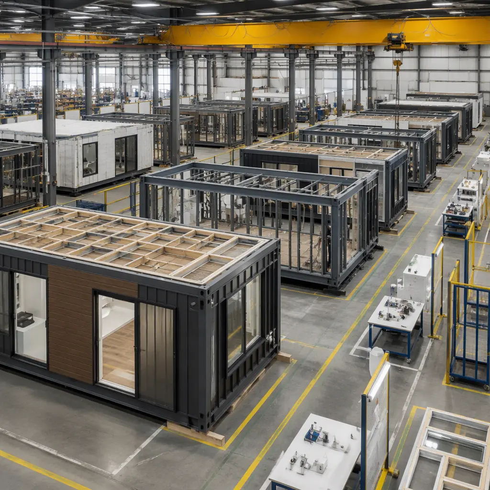

Choosing the wrong contract structure for a modular construction project does not just create administrative headaches—it misaligns incentives at the point where modular delivers its greatest value: the factory floor. A cost-plus contract on a modular project effectively penalizes the owner for the manufacturer's production efficiency, because the manufacturer's profit is tied to costs rather than outcomes. A lump sum contract, conversely, locks in price certainty but removes flexibility for owner-driven design changes during factory production, which is when changes are cheapest to implement. Understanding which contract type matches your project's risk profile, design maturity, and stakeholder alignment is the most important procurement decision you will make before breaking ground. Our modular RFP guide covers how to structure the solicitation itself.
Lump Sum (Fixed Price): Maximum Certainty, Minimum Flexibility
In a lump sum contract, the modular manufacturer agrees to deliver the complete building for a fixed price. The owner knows exactly what they will pay before the first steel member is cut. This structure transfers virtually all cost risk to the manufacturer—if steel prices rise 15% during production, the manufacturer absorbs the increase.
Lump sum works exceptionally well for modular construction when three conditions are met: the design is 100% complete at contract signing (Construction Documents, not Design Development), the owner has made all finish and fixture selections, and the project does not involve site conditions with high uncertainty (contaminated soils, unknown utilities, complex foundation requirements). Modular manufacturers prefer lump sum because factory production is inherently predictable—the controlled environment eliminates the weather delays, trade stacking conflicts, and rework cycles that make site-built lump sum contracts risky for general contractors.
Cost certainty benefit. A lump sum modular contract typically carries a 3-5% contingency versus 8-12% for site-built lump sum. The factory environment's predictability allows the manufacturer to price with tighter margins, passing savings to the owner. For a $4 million modular medical office building, the difference between a 5% and 10% contingency is $200,000 that stays in the owner's budget. Our cost per square foot guide provides benchmark pricing by building type.
Risk. Change orders in a lump sum modular contract are expensive—not because modular is inherently costly to change, but because the lump sum structure means the manufacturer has no incentive to price changes competitively. A design change requested after factory production begins typically carries a 15-25% premium over what the same change would cost if included in the original scope. The solution is rigorous design freeze at contract signing. For guidance on managing scope changes, see our change order management guide.
Guaranteed Maximum Price (GMP): Cost Transparency With a Cap
A GMP contract establishes a ceiling price that the owner will not exceed, with the manufacturer reimbursed for actual costs plus a fee. If actual costs come in below the GMP, the savings are split between owner and manufacturer according to a pre-negotiated ratio (typically 50/50 or 60/40 owner/manufacturer). This creates a shared incentive to control costs while protecting the owner from budget overruns.
GMP is the most common contract structure for modular projects in the $2-15 million range because it balances cost transparency with budget protection. The open-book cost reporting gives owners visibility into material costs, factory labor hours, transportation logistics, and site work that a lump sum contract obscures. For projects where the owner wants to verify that the 10-15% modular cost advantage is real rather than a sales claim, GMP's cost transparency is invaluable.
Shared savings incentive. The savings split mechanism in GMP contracts directly rewards the modular manufacturer for production efficiency. If the manufacturer reduces factory labor hours through process improvement, both parties benefit. This aligns the manufacturer's operational excellence with the owner's budget goals—a structural advantage over cost-plus, where efficiency reduces the manufacturer's fee. For a broader view of how factory production controls costs, read our factory QC analysis.
Risk. For a deeper look, our modular vs. traditional construction guide covers the details. GMP contracts require robust cost tracking infrastructure from the manufacturer. Owners should verify that the manufacturer uses an ERP system with job-cost accounting that can produce weekly cost-to-complete reports, not monthly spreadsheet reconciliations. A manufacturer running GMP projects on QuickBooks is a red flag—the cost visibility the contract promises will not materialize.

Cost-Plus: Flexibility at a Price
In a cost-plus contract, the owner reimburses the manufacturer for all actual costs plus a fee, which is typically structured as a percentage of costs (cost-plus-percentage) or a fixed fee (cost-plus-fixed-fee). Cost-plus is appropriate when the project scope is genuinely uncertain—adaptive reuse of an existing structure with unknown conditions, or a highly customized building where the design will evolve during production.
Cost-plus is the least favorable contract structure for standard modular projects because it disconnects the manufacturer's profit from production efficiency. Every dollar the manufacturer saves through process improvement is a dollar of fee they do not earn. This perverse incentive is why experienced modular buyers avoid cost-plus except when project uncertainty makes it unavoidable.
When cost-plus makes sense. Cost-plus is defensible for modular projects under 5,000 sq ft with highly customized architectural requirements, or for prototype buildings where the owner expects to iterate the design across multiple future phases and wants to optimize the first unit without contract friction. In these cases, the flexibility value justifies the weaker cost control. For standard modular projects, the turnkey construction approach delivers better outcomes.
Design-Build: Single-Point Responsibility for Modular
Design-build is the contract structure that most naturally aligns with modular construction's integrated workflow. Under design-build, a single entity—the modular manufacturer or a manufacturer-led team—is responsible for both design and construction. There is no separate design contract, no gap between the architect's design intent and the manufacturer's production capabilities, and no finger-pointing when a design element proves difficult to fabricate.
Modular construction is inherently design-build. The BIM model that drives factory production is the same model that produces construction documents. Separating design and construction into different contracts with different entities breaks this integration—the architect designs without understanding the manufacturer's module dimensions, transportation constraints, and assembly sequence, and the manufacturer receives drawings that require expensive redesign for factory production.
Speed advantage. Design-build modular projects typically deliver 20-25% faster than design-bid-build modular projects because the design phase and factory procurement phase overlap. The manufacturer orders long-lead materials (steel, MEP equipment, windows) while design is being finalized, rather than waiting for 100% CD completion. For a comparison of modular delivery timelines by contract type, see our project timeline guide.
Risk. Design-build concentrates risk in a single entity. Owner oversight shifts from managing multiple contracts to managing one relationship. This requires a different procurement skillset—the owner must evaluate the manufacturer's design capability, not just their production capability. Our partner evaluation checklist provides a 10-point assessment framework.
Contract Selection Decision Matrix
| Project Profile | Recommended Contract | Key Reason |
|---|---|---|
| Standard multi-family, 50+ units, repeatable design | Lump Sum | Maximum cost certainty; design is complete |
| Medical office, 15,000 sq ft, some customization | GMP | Cost transparency + budget protection |
| Government/municipal, public procurement rules | GMP or Lump Sum | Required by public procurement law in most jurisdictions |
| Prototype building, first of multiple phases | Cost-Plus (Phase 1) → Lump Sum (Phase 2+) | Flexibility for prototype; certainty for repeats |
| Complex healthcare, 30,000+ sq ft, integrated MEP | Design-Build | Single-point MEP coordination responsibility |
| Hospitality portfolio, 5-10 hotels, standardized brand | Lump Sum (per-project or portfolio) | Portfolio pricing; repeatable design eliminates uncertainty |
Payment Structures That Align Modular Cash Flow
Modular construction's cash flow profile is fundamentally different from site-built: 60-70% of the project cost is incurred in the factory before the first module arrives on site, versus 20-30% of site-built cost incurred before foundation pour. Contract payment schedules must reflect this reality, or the manufacturer faces unsustainable negative cash flow. For a full treatment of payment scheduling, see our payment draw schedule guide.
The standard modular payment structure aligns draws with production milestones: 10% at contract signing (mobilization), 20% at design completion and material procurement, 30% at factory production start (first steel cut), 20% at factory production 50% complete, 15% at module delivery to site, and 5% at final completion and occupancy. This front-loaded structure is not a sign of financial weakness in the manufacturer—it reflects the reality that the building is substantially complete before it leaves the factory.